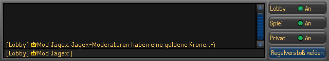
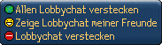
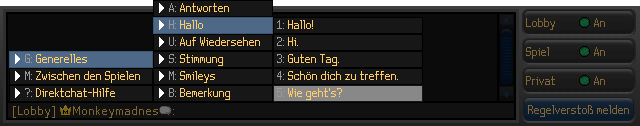
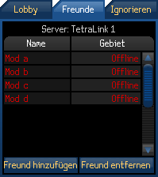
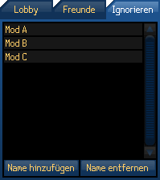
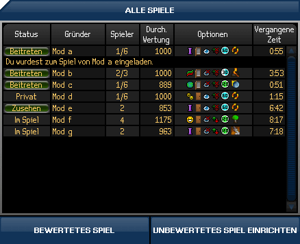
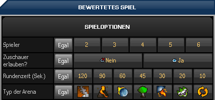

")
1. Wie benutze ich das Chatfenster?
Der Chat ist ein wichtiger Teil der Mehrspieler-Spiele auf FunOrb. Ihr werdet bemerken, dass es viele verschiedene Arten gibt, mit euren Freunden in Kontakt zu bleiben oder mit anderen Spielern zu interagieren. Mit dem Chatten k�nnt ihr loslegen, indem ihr einfach in das Chatfenster tippt.
Im Chatfenster, das in der Lobby von allen Mehrspieler-Spielen verf�gbar ist, seht ihr die Nachrichten von anderen Spielern. Wenn ihr euch aber in einer Gegend befindet, in der viel los ist, ist es n�tzlich, eure Chatoptionen (also wie euch der Chat angezeigt wird) zu ver�ndern.
Mithilfe der vier Schaltfl�che auf der rechten Seite des FunOrb-Spielfensters wird gesteuert, wie der Chat funktioniert. Lobby, Spiel sowie Privat sind Chatfilter und Regelversto� melden erm�glicht es, Spieler zu melden, die gegen die Verhaltensregeln versto�en.

Die Schaltf�chen Lobby, Spiel und Privat �ffnen ein Men�:



Durch Klick dieser Schaltfl�chen wird gesteuert, welche Informationen im Chatfenster angezeigt werden. Wenn Lobby- und Spiel-Chat versteckt werden, ist nur noch der Chat der Freunde zu sehen. Wenn man Privat versteckt, scheint man f�r alle Spieler offline zu sein.
Regelversto�-Meldungen
Die Schaltfl�che 'Regelversto� melden' ist eure M�glichkeit, uns bei Jagex �ber diejenigen Spieler zu informieren, die sich danebenbenehmen oder gegen eine unserer Regeln versto�en.
Wenn ihr ausf�lliges Verhalten oder Beschimpfungen mitbekommt, solltet ihr 'Regelversto� melden' anklicken, dann den Namen des Spielers korrekt eingeben und schlie�lich im n�chsten Schritt ausw�hlen, gegen welche Regeln er oder sie versto�en hat. Weitere Informationen dazu findet ihr hier.
Wir werden euren Regelversto�-Bericht erhalten und sofort Ma�nahmen gegen den betreffenden Spieler einleiten. Sollten wir allerdings herausfinden, dass ihr dieses System missbraucht, werden wir stattdessen gegen euch vorgehen.

Der Direktchat macht es m�glich, in verschiedenen Situationen schnell und effizient mit anderen zu kommunizieren. Den Standard-Direktchat k�nnt ihr benutzen, indem ihr die Taste 'F10' auf eurer Tastatur dr�ckt oder indem ihr auf das Direktchat-Symbol neben eurem Namen am unteren Ende des Chatfensters klickt.
Wenn ihr den Direktchat ausgew�hlt habt, wird sich euer Chatfenster ver�ndern, sodass ihr eine Auswahl von Chatkategorien seht, die in weitere Optionen unterteilt sind:

Klickt auf eine Hauptkategorie und es �ffnet sich ein Untermen�, mit dessen Hilfe ihr S�tze zusammenbauen k�nnt. Mit 'Zwischen den Spielen' k�nnt ihr Spiele auf FunOrb oder in RuneScape organisieren.
W�hlt eine Kategorie per Klick oder per Schnellauswahltaste aus. Um eine generellen Kommentar abzugeben, dr�ckt einfach 'G' f�r 'Generelles', dann 'H' f�r 'Hallo' und dann '1-5', um eine Auswahl zu treffen. Jedes Fenster �ffnet sich als Untermen�.
Direktchat-Tastenk�rzel:
- R�cktaste Zur�ck zum vorherigen Men�
- Pos1: Zur�ck zum Hauptfenster des Men�s
- F9: Automatisch auf letzte Frage im Chatfenster antworten
- F10: �ffnet das Direktchat-Men�
- F11: Wiederholt die letzte Aussage
- Esc: Schlie�t das Direktchat-Men�
In FunOrb ist es in manchen Situationen praktisch, Freunde zu haben. Abgesehen davon ist es nat�rlich immer eine tolle Sache, Freunde aus der ganzen Welt zu treffen. Um euch zu helfen, eure Freunde zu verwalten, gibt es eine Freunde-Liste und eine Ignorieren-Liste, die ihr in der Mehrspieler-Lobby bearbeiten k�nnt.

Die Freunde-Liste erm�glicht es euch, mit Freunden auf FunOrb und in RuneScape Kontakt zu halten.
Ihr k�nnt der Liste einen Freund hinzuf�gen, indem ihr die Schaltfl�che 'Freund hinzuf�gen' anklickt und dann den Namen des Freundes eintippt. Es ist auch m�glich, jemanden der Liste hinzuzuf�gen, indem man im Chatfenster auf dessen Namen rechtsklickt und danach die entsprechende Option ausw�hlt.
Nachdem ihr eurer Liste einen Freund hinzugef�gt habt, werdet ihr immer informiert werden, wenn er oder sie sich ins Spiel einloggt oder ausloggt (au�er es wird durch deren eingestellte Chatoptionen verhindert - siehe unten). Spieler, die sich gerade auf derselben Welt befinden, erscheinen in Gr�n. Spieler, die gerade auf einer anderen Welt spielen, erscheinen in Gelb und Spieler, die im Moment �berhaupt nicht spielen, erscheinen in Rot.
Ihr k�nnt Freunden auf der Liste auch private Mitteilungen schicken, wenn sie gerade spielen. Klickt einfach auf den Namen des Spielers und tippt die Mitteilung, die ihr schicken wollt. Um jemanden wieder von der Liste zu entfernen, m�sst ihr auf 'Freund entfernen' klicken und den Namen der Person eintippen, die ihr entfernen wollt.

Falls es einen speziellen Spieler gibt, von dem ihr keine Mitteilungen bekommen wollt, dann setzt seinen oder ihren Namen auf die Ignorieren-Liste.
Das k�nnt ihr tun, indem ihr die Schaltfl�che 'Namen hinzuf�gen' anklickt und den Namen der Person eingebt, die ihr ignorieren wollt.
Es ist ebenfalls m�glich, einen Spieler der Ignorieren-Liste hinzuzuf�gen, indem man einfach auf dessen Namen im Chatfenster rechtsklickt und danach die entsprechende Option ausw�hlt.
Wenn ihr einen Namen von der Liste wieder entfernen wollt, m�sst ihr die Schaltfl�che 'Namen entfernen' anklicken und den Namen der Person eingeben, die ihr von der Liste streichen wollt.
In FunOrb gibt es zwei Arten an Mehrspieler-Spielen: unbewertet und bewertet. Spieler k�nnen die Regeln festlegen und Freunde einladen. Bewertete Spiele werden gegen zuf�llig ausgew�hlte Gegner ausgetragen. Die Regeln sind daher nicht frei w�hlbar und Freunde k�nnen nicht eingeladen werden.
Die Lobby zeigt alle verf�gbaren Mehrspieler-Spiele. Ihr k�nnt beitreten oder zusehen. Ihr k�nnt auch euer eigenes unbewertetes Spiel einrichten.

Bewertete Spiele
Um bei Mehrspieler-Spielen auf die Highscores zu kommen, m�sst ihr an bewerteten Spielen teilnehmen. Je mehr ihr gewinnt, desto h�her steigt eure Wertung.
Um unfaire Situationen zu vermeiden, sind bewertete Spiele anonym. Man kann aber bestimmte Optionen einstellen.
Hier ein Beispiel aus Arkanisten. Die Optionen h�ngen vom Spiel ab.

Unbewertete Spiele
Diese Spiele werden eure Wertung nicht beeinflussen und k�nnen den W�nschen des Spielers entsprechend eingestellt werden. Ihr k�nnt eure Freunde einladen oder nach passenden Mitspielern suchen.
Um schnell Mitspieler zu finden, sollte man so wenig Optionen wie m�glich festlegen. Die beste Option daf�r ist 'egal'.
Falls sich ein Freund auf dem gleichen Server befindet, kann man ihn rechtsklicken und einladen. Alle Spieler, die eingeladen werden k�nnen, erscheinen in dem Fenster 'Freund einladen'.